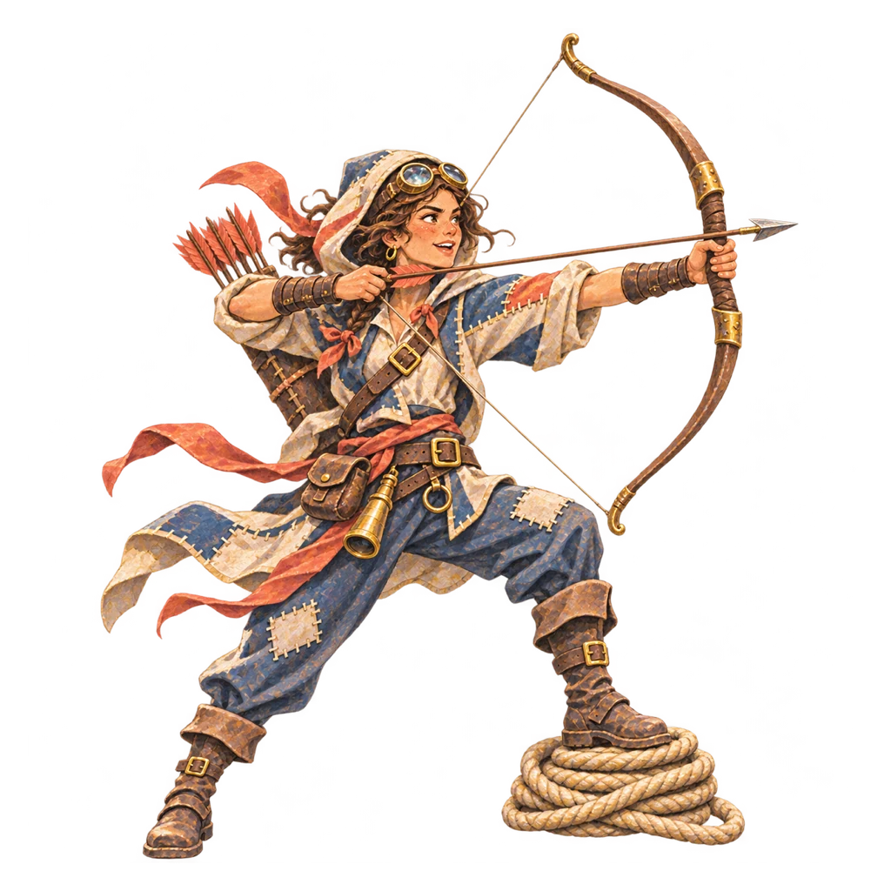

Атлас Небесных Островов
Карты и фигурки ведущего
Игровой комплект
6 игроков · 7 игроков · 8 игроков
Карта кампании

Поля боя


Герои


Персонажи ведущего


Противники
 Облачный налётчик с «Сороки» 2Облачный налётчик с «Сороки» 4Облачный налётчик с «Сороки» 1Облачный налётчик с «Сороки» 2Облачный налётчик с «Сороки» 4Облачный налётчик с «Сороки» 3Облачный налётчик с «Сороки» 1Облачный налётчик с «Сороки» 6Облачный налётчик с «Сороки» 3Облачный налётчик с «Сороки» 5
Облачный налётчик с «Сороки» 2Облачный налётчик с «Сороки» 4Облачный налётчик с «Сороки» 1Облачный налётчик с «Сороки» 2Облачный налётчик с «Сороки» 4Облачный налётчик с «Сороки» 3Облачный налётчик с «Сороки» 1Облачный налётчик с «Сороки» 6Облачный налётчик с «Сороки» 3Облачный налётчик с «Сороки» 5

Дозорный «Сороки» 2Дозорный «Сороки» 1 Скальный облачный орёл 1Скальный облачный орёл 2Скальный облачный орёл 3Скальный облачный орёл 4
Скальный облачный орёл 1Скальный облачный орёл 2Скальный облачный орёл 3Скальный облачный орёл 4 Горран Таль, капитан «Сороки»
Горран Таль, капитан «Сороки»